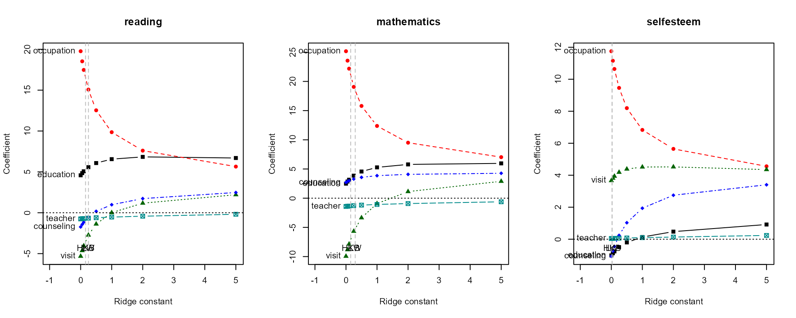
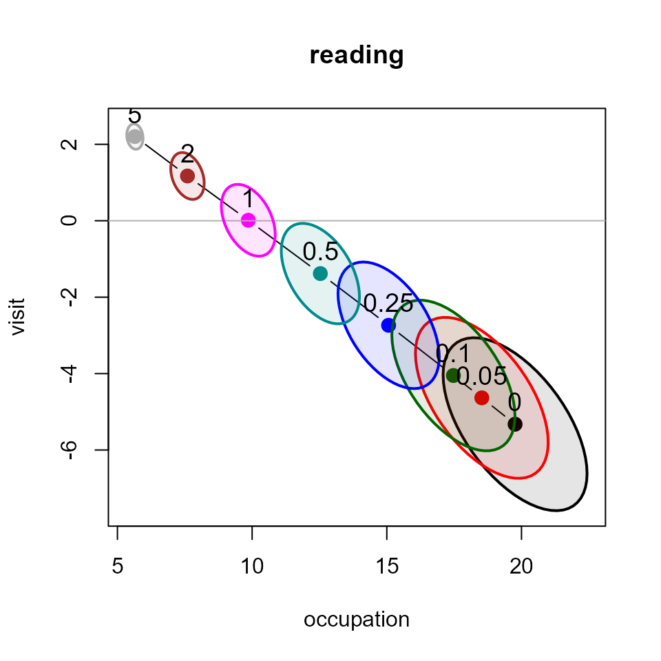
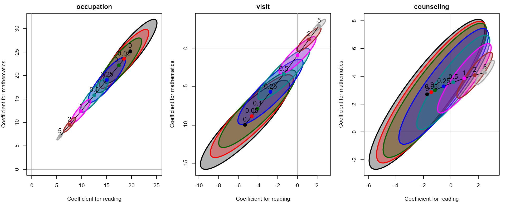
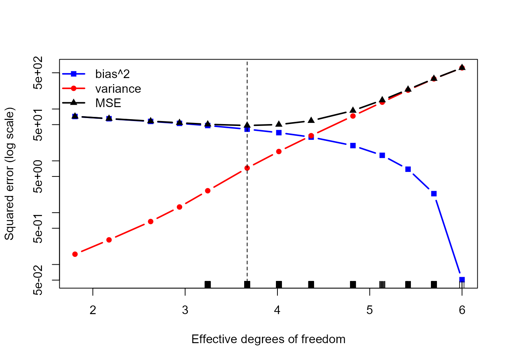

Multivariate ridge regression (experimental)
Michael Friendly
2026-11-20
Source:vignettes/articles/mlm-ridge.Rmd
mlm-ridge.RmdExperimental. The multivariate extension of
ridge()is new in genridge 0.8.1. Its functions, arguments and results may change in future versions. This article is a draft, shown on the package website but not included in the package.
Introduction
When there are several response variables, \mathbf{Y} (n \times q), to be predicted from the same set of collinear predictors, \mathbf{X} (n \times p), the multivariate linear model (MLM) \mathbf{Y} = \mathbf{X} \mathbf{B} + \mathbf{E} suffers from collinearity in the same way as a univariate regression. The simplest multivariate ridge estimator uses one ridge constant, \lambda, for all responses (Breiman and Friedman 1997, eq. 6.3):
\widehat{\mathbf{B}}(\lambda) = (\mathbf{X}^\top \mathbf{X} + \lambda \mathbf{I})^{-1} \mathbf{X}^\top \mathbf{Y} \enspace .
Because the penalty involves only \mathbf{X}, each column of \widehat{\mathbf{B}}(\lambda) is exactly the univariate ridge estimate for that response. What the multivariate view adds is:
- a common choice of \lambda, using criteria pooled over the responses;
- the covariance of the coefficients across responses. For predictor j, its coefficients for all q responses (row j of \widehat{\mathbf{B}}) have covariance matrix [\mathbf{V}_\lambda]_{jj}\, \boldsymbol{\Sigma}, where \mathbf{V}_\lambda = (\mathbf{X}^\top \mathbf{X} + \lambda \mathbf{I})^{-1} \mathbf{X}^\top \mathbf{X} (\mathbf{X}^\top \mathbf{X} + \lambda \mathbf{I})^{-1} depends only on the predictors and \boldsymbol{\Sigma} is the residual covariance matrix of the responses. That is, \text{Var}(\text{vec}\, \widehat{\mathbf{B}}) = \boldsymbol{\Sigma} \otimes \mathbf{V}_\lambda.
genridge fits these models with ridge(), given a matrix
response. The implementation was adapted from
lm_multiv_ridge() in the VARshrink package
(Lee and Kim
2026), extended to give the covariance matrices of the
coefficients and the HKB and LW criteria; note that, for the same
scaling of the predictors, genridge’s \lambda is n
times VARshrink’s. genridge provides plots of both kinds: within one
response, as for univariate ridge regression (Friendly 2013), and across
responses.
Example: school data
The schooldata data set in the heplots
package comes from an evaluation of Program Follow Through (Charnes, Cooper, and
Rhodes 1981). For 70 schools, three measures of student
achievement, reading, mathematics and
selfesteem, are to be predicted from five measures of the
schools’ resources: education and occupation
(of the parents), visit (parental visits to the school),
counseling (parent counseling) and teacher
(number of teachers).
data(schooldata, package = "heplots")
str(schooldata)
#> 'data.frame': 70 obs. of 8 variables:
#> $ education : num 86.1 29.3 43.1 25 11.6 ...
#> $ occupation : num 16.24 10.24 11.31 6.14 2.21 ...
#> $ visit : num 48.21 41.96 38.19 24.81 6.85 ...
#> $ counseling : num 49.69 40.65 35.03 25.15 6.37 ...
#> $ teacher : int 9 5 9 7 4 4 7 8 8 9 ...
#> $ reading : num 54.53 24.69 36.41 14.94 7.81 ...
#> $ mathematics: num 58.98 33.89 40.62 17.58 6.94 ...
#> $ selfesteem : num 38.16 26.02 28.51 16.19 5.37 ...Three of the predictors are almost the same variable, so the collinearity is severe:
round(cor(schooldata[, c("education", "occupation", "visit", "counseling", "teacher")]), 2)
#> education occupation visit counseling teacher
#> education 1.00 0.87 0.79 0.81 0.57
#> occupation 0.87 1.00 0.98 0.98 0.61
#> visit 0.79 0.98 1.00 0.99 0.57
#> counseling 0.81 0.98 0.99 1.00 0.59
#> teacher 0.57 0.61 0.57 0.59 1.00
school.mlm <- lm(cbind(reading, mathematics, selfesteem) ~
education + occupation + visit + counseling + teacher, data = schooldata)
car::vif(lm(reading ~ education + occupation + visit + counseling + teacher, data = schooldata))
#> education occupation visit counseling teacher
#> 7.351 85.865 61.598 53.855 1.644As a result, some OLS coefficients have the “wrong” sign.
visit is strongly and positively correlated with reading
and mathematics, but its coefficients for these are negative, while
those for occupation are inflated:
coef(school.mlm)
#> reading mathematics selfesteem
#> (Intercept) -0.17935 -0.3661 -0.04135
#> education 0.20271 0.1102 -0.04482
#> occupation 3.74507 4.7702 2.22723
#> visit -0.28301 -0.5288 0.19456
#> counseling -0.09146 0.1425 -0.05625
#> teacher -0.18094 -0.3413 0.01055Fitting
ridge() with a matrix response (here,
cbind() in the model formula) fits all responses with the
same ridge constants and returns an object of class
"mlmridge". As the criteria below show, the optimal values
of \lambda are small for these data, so
the grid of ridge constants is fine at the low end.
lambda <- c(0, 0.05, 0.1, 0.25, 0.5, 1, 2, 5)
sridge <- ridge(cbind(reading, mathematics, selfesteem) ~
education + occupation + visit + counseling + teacher,
data = schooldata, lambda = lambda)
sridge
#> Multivariate ridge regression: 3 responses, 5 predictors, 8 ridge constants
#>
#> Ridge Coefficients for reading:
#> education occupation visit counseling teacher
#> 0.00 4.58218 19.76188 -5.32502 -1.73578 -0.74980
#> 0.05 4.84770 18.52686 -4.63467 -1.43074 -0.72769
#> 0.10 5.07236 17.47234 -4.05035 -1.16407 -0.70834
#> 0.25 5.57519 15.06640 -2.73616 -0.53173 -0.66174
#> 0.50 6.08095 12.53275 -1.38274 0.17616 -0.60592
#> 1.00 6.55830 9.85708 0.01228 0.98336 -0.52900
#> 2.00 6.83543 7.59979 1.17167 1.73285 -0.42081
#> 5.00 6.69843 5.64850 2.20280 2.47667 -0.18678
#>
#> Ridge Coefficients for mathematics:
#> education occupation visit counseling teacher
#> 0.00 2.49016 25.17132 -9.94958 2.70527 -1.41413
#> 0.05 2.85342 23.55860 -8.82312 2.86088 -1.37893
#> 0.10 3.16165 22.18493 -7.86157 2.99137 -1.34813
#> 0.25 3.85615 19.06337 -5.66874 3.28025 -1.27415
#> 0.50 4.56788 15.79699 -3.36093 3.56978 -1.18694
#> 1.00 5.27651 12.37338 -0.92509 3.85738 -1.07162
#> 2.00 5.78498 9.50548 1.12867 4.08490 -0.92047
#> 5.00 5.96231 7.02956 2.88916 4.26731 -0.61598
#>
#> Ridge Coefficients for selfesteem:
#> education occupation visit counseling teacher
#> 0.00 -1.013058 11.752574 3.660785 -1.067490 0.043723
#> 0.05 -0.879096 11.154915 3.813990 -0.742370 0.048950
#> 0.10 -0.763647 10.641759 3.936285 -0.454773 0.053449
#> 0.25 -0.495356 9.459988 4.182480 0.238615 0.064165
#> 0.50 -0.201386 8.195963 4.383807 1.029905 0.077378
#> 1.00 0.135022 6.832520 4.512820 1.937733 0.098111
#> 2.00 0.473460 5.646664 4.520424 2.749436 0.134616
#> 5.00 0.918585 4.557150 4.351906 3.402588 0.235225
#>
#> Optimal ridge constants:
#> kHKB kLW kGCV
#> reading 0.157550 0.251111 0.100000
#> mathematics 0.152007 0.297301 0.100000
#> selfesteem 0.026794 0.022683 0.050000
#> GCV pooled over responses (scaled): 0.05The HKB, LW and GCV criteria are calculated for each response. GCV is
also pooled over responses (by default, scaling each response by its
residual variance, so the result does not depend on the units of the
responses) to give a common value. pool = "raw" instead
sums the residual sums of squares, as in VARshrink, so
the response with the largest variance dominates:
sridge$criteria
#> kHKB kLW kGCV
#> reading 0.15755 0.25111 0.10
#> mathematics 0.15201 0.29730 0.10
#> selfesteem 0.02679 0.02268 0.05
sridge$kGCV.pooled
#> [1] 0.05Trace plots
traceplot() shows the univariate ridge trace plot for
each response, one panel each:
traceplot(sridge)
Ridge trace plots for the three responses in the school data. Gray lines mark the HKB and LW estimates for each response; the blue line, the common value chosen by pooled GCV.
All three responses show the same pattern: occupation’s
large coefficient shrinks quickly, and visit’s negative
coefficients for reading and mathematics become positive, but only at
\lambda \approx 1 (reading) and \lambda \approx 2 (mathematics), well past
the values suggested by the criteria. This is an important lesson: the
amount of shrinkage that is best for prediction (which the
criteria aim for) may be much less than is needed to make the
coefficients interpretable.
Within one response
as.ridge() extracts the results for one response as an
ordinary "ridge" object, and the plot methods accept
response = to do this directly. The bivariate ridge trace
plot for occupation and visit, for reading,
shows the path of the two coefficients and their covariance
ellipses:
plot(sridge, response = "reading", variables = c("occupation", "visit"),
radius = 0.5, fill = TRUE, fill.alpha = 0.1)
Bivariate ridge trace plot for occupation and visit, for reading.
Across responses
With predictor =, plot() shows instead the
coefficients of one predictor for two responses, with
their covariance ellipses, across \lambda. Because the covariance matrix of a
predictor’s coefficients is [\mathbf{V}_\lambda]_{jj}\,
\boldsymbol{\Sigma}, all the ellipses have the same shape and
orientation, that of the residual covariance of the two responses; only
their size and center change.
op <- par(mfrow = c(1, 3), mar = c(4, 4, 2, 1))
for (p in c("occupation", "visit", "counseling"))
plot(sridge, predictor = p, responses = c("reading", "mathematics"), fill = TRUE)
Coefficients for reading and mathematics, with covariance ellipses, for three predictors.
par(op)These show things a univariate view cannot:
-
visit’s coefficients cross zero for both responses together, as \lambda increases. -
counseling’s coefficients move away from the origin. Ridge regression shrinks the length of the whole vector of coefficients, not each one: with highly correlated predictors, some coefficients grow while others shrink.
The ellipses are long and thin, because the residuals for reading and mathematics are highly correlated:
round(cov2cor(sridge$Sigma), 3)
#> reading mathematics selfesteem
#> reading 1.000 0.884 0.469
#> mathematics 0.884 1.000 0.404
#> selfesteem 0.469 0.404 1.000Note that these ellipses show the sampling variability of a
biased estimate; unlike the confidence ellipses of
heplots::coefplot(), whether they cover the origin is not a
test.
Other summaries
Since all responses share the same predictors and ridge constants, the variance inflation factors are the same for every response:
vif(sridge)
#> Variance inflaction factors:
#> education occupation visit counseling teacher
#> 0.00 7.351 85.865 61.598 53.855 1.644
#> 0.05 6.686 73.079 53.447 48.062 1.636
#> 0.10 6.160 62.985 46.875 43.174 1.629
#> 0.25 5.098 42.792 33.267 32.349 1.613
#> 0.50 4.182 25.785 21.149 21.735 1.595
#> 1.00 3.410 12.566 11.067 11.984 1.569
#> 2.00 2.855 5.216 5.021 5.575 1.533
#> 5.00 2.270 1.717 1.935 2.030 1.448Simulation: bias and variance with known coefficients
With real data, we cannot see how close the estimates are to the true coefficients. A simulation, in which the true \mathbf{B} is known, shows the tradeoff of bias and variance directly. We use the six (very collinear) predictors from Longley’s data, and generate three responses with known coefficients and correlated errors.
genridge centers the predictors and scales them to unit mean square, so we define the true coefficients on that scale:
X <- data.matrix(longley[, c("GNP", "Unemployed", "Armed.Forces",
"Population", "Year", "GNP.deflator")])
n <- nrow(X)
Xs <- scale(X, scale = FALSE)
Xs <- Xs / rep(sqrt(colMeans(Xs^2)), each = n)
B <- 4 * cbind(Y1 = c( 1.0, -1.0, 0.5, 0.0, 1.0, 0.5),
Y2 = c( 0.5, 0.5, 0.5, 0.5, 0.5, 0.5),
Y3 = c( 1.5, 0.0, -0.5, 0.0, 0.0, -1.0))
rownames(B) <- colnames(X)
Sigma <- matrix(0.5, 3, 3); diag(Sigma) <- 1 # error covariance: correlation 0.5We simulate 1000 data sets, fit a multivariate ridge regression to each, and record the estimates and the value of \lambda chosen by pooled GCV.
lambda <- c(0, 0.002, 0.005, 0.01, 0.02, 0.05, 0.1, 0.2, 0.5, 1, 2, 5, 10)
nsim <- 1000
set.seed(1234)
L <- chol(Sigma)
est <- array(NA, c(nsim, length(lambda), nrow(B), ncol(B)))
kGCV <- numeric(nsim)
for (r in 1:nsim) {
Y <- Xs %*% B + matrix(rnorm(n * 3), n, 3) %*% L
fit <- ridge(Y, X, lambda = lambda)
est[r, , , ] <- coef(fit, type = "array")
kGCV[r] <- fit$kGCV.pooled
}The mean squared error of \widehat{\mathbf{B}}(\lambda), summed over all coefficients, splits into squared bias and variance:
Bbar <- apply(est, c(2, 3, 4), mean)
bias2 <- sapply(seq_along(lambda), function(i) sum((Bbar[i, , ] - B)^2))
variance <- sapply(seq_along(lambda), function(i) sum(apply(est[, i, , ], c(2, 3), var)))
mse <- data.frame(lambda, df = fit$df, bias2, variance, MSE = bias2 + variance)
mse
#> lambda df bias2 variance MSE
#> 1 0e+00 6.000 0.05096 622.8831 622.93
#> 2 2e-03 5.695 2.32806 382.0205 384.35
#> 3 5e-03 5.415 6.89938 231.1693 238.07
#> 4 1e-02 5.135 12.77241 135.4905 148.26
#> 5 2e-02 4.818 19.70648 73.3471 93.05
#> 6 5e-02 4.366 28.71459 30.5863 59.30
#> 7 1e-01 4.015 34.98072 15.1409 50.12
#> 8 2e-01 3.672 40.82181 7.2577 48.08
#> 9 5e-01 3.245 47.99817 2.6501 50.65
#> 10 1e+00 2.939 52.89558 1.2869 54.18
#> 11 2e+00 2.627 57.66017 0.6749 58.34
#> 12 5e+00 2.176 64.98786 0.2986 65.29
#> 13 1e+01 1.807 71.74781 0.1580 71.91
with(mse, {
matplot(df, cbind(bias2, variance, MSE), type = "b", log = "y", pch = 15:17, lty = 1,
col = c("blue", "red", "black"), lwd = 2,
xlab = "Effective degrees of freedom", ylab = "Squared error (log scale)")
legend("topleft", c("bias^2", "variance", "MSE"), col = c("blue", "red", "black"),
pch = 15:17, lwd = 2, bty = "n")
best <- which.min(MSE)
abline(v = df[best], lty = 2)
})
rug(jitter(fit$df[match(kGCV, lambda)], amount = 0.03))
Squared bias, variance and mean squared error of the ridge estimates against the effective degrees of freedom, over 1000 simulated data sets. The rug shows the values of df chosen by pooled GCV.
The variance of the OLS estimates (\text{df} = 6) is enormous, and even a little shrinkage reduces it dramatically, at the cost of a small increase in bias. The MSE is smallest at \lambda = 0.2 (df \approx 3.7), where it is about 13 times smaller than for OLS. The values of \lambda chosen by pooled GCV (median 0.1) are close to this optimum.
Further directions
This extension is experimental. Planned or possible developments include:
- a display of all predictors’ coefficient paths across two responses, to show how ridge regression pulls the coefficients of near-duplicate predictors together (the “grouping effect”);
- ridge HE plots: hypothesis-error (HE) plots, as in the heplots package, showing how the hypothesis and error matrices change with \lambda;
- multivariate ridge estimators that shrink differently for each response, or across responses, such as that of Brown and Zidek (1980).